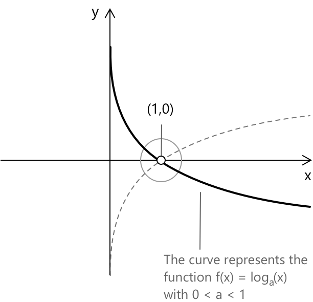

Логарифмічні нерівності
Вступ
Логарифмічні нерівності — це нерівності, що містять один або кілька логарифмічних виразів, у яких невідома змінна \(x\) з'являється або в аргументі логарифма, або, в деяких випадках, у самій основі. Перш ніж переходити до логарифмічних нерівностей, важливо мати ґрунтовне розуміння логарифмів, їхніх основних властивостей та стандартних методів, що використовуються для розв'язання логарифмічних рівнянь, оскільки ці інструменти є вирішальними для правильного підходу та розв'язання таких нерівностей.
Логарифмічні нерівності можуть мати загальний вигляд:
\[ \log_af(x) \lesseqgtr \log_ag(x) \]
- \(a\) — основа логарифма, при якій (a > 0) та \(a \neq 1.\)
- \(f(x)\) та \(g(x)\) — алгебраїчні вирази, що залежать від змінної \(x.\)
- Символ \(\lesseqgtr\) позначає одне з відношень \(\le\), \(=\) або \(\ge.\)
Крім того, щоб нерівність була правильно визначеною, мають бути виконані такі умови:
\[ \begin{cases} f(x) > 0\\[0.6em] g(x) > 0\\[0.6em] \end{cases} \]
Нерівність, що містить логарифмічний вираз, у якому невідома змінна не з'являється ні в аргументі, ні в основі логарифма, не є логарифмічною нерівністю. Іншими словами, така нерівність, як:
\[
\log_3(9) - 3x > 0
\]
не є логарифмічною нерівністю, оскільки логарифмічний член є сталою. Натомість,
\[
\log_3(9x) – 3x > 0
\]
є логарифмічною нерівністю, тому що змінна \(x\) з'являється всередині аргументу логарифма і безпосередньо впливає на його область визначення та поведінку.
Як розв'язувати логарифмічні нерівності
Процес розв'язання логарифмічних нерівностей є загальним, проте для зручності пояснення розглянемо наступну нерівність: \[ \log_a f(x) \ge \log_a g(x) \]
Процедуру можна розділити на чотири основні кроки:
-
Визначити область визначення нерівності, встановивши умови допустимості. Аргументи всіх логарифмічних виразів мають бути строго додатними, а основа має задовольняти: \[ \begin{cases} f(x) > 0 \\[0.6em] g(x) > 0 \\[0.6em] \end{cases} \]
-
Основа має задовольняти: \[ \begin{cases} a > 0 \\[0.6em] a \neq 1 \\[0.6em] \end{cases} \]
-
Якщо \(a > 1\), логарифмічна функція є зростаючою, і нерівність зберігає свій напрямок при відкиданні логарифмів.
-
Якщо \(0 < a < 1\), логарифмічна функція є спадаючою, і напрямок нерівності має бути змінений на протилежний при відкиданні логарифмів.
-
Використати монотонність логарифмічної функції, щоб відкинути логарифми та звести задачу до еквівалентної алгебраїчної нерівності, що містить \(f(x)\) та \(g(x)\).
-
Розв'язати отриману алгебраїчну нерівність і знайти перетин множини розв'язків з previously визначеною областю визначення, відкинувши всі значення, що не задовольняють початкових логарифмічних умов.
Щоб пояснити роль, яку відіграє основа логарифма, згадаємо поведінку логарифмічної функції, коли \(0 < a < 1\). З її графіка ми помічаємо, що функція є строго спадаючою на всій своїй області визначення, з вертикальною асимптотою вздовж осі \(y\):

Пунктирна крива представляє логарифмічну функцію з основою \(a > 1\). У цьому випадку функція є строго зростаючою. В обох випадках, коли \(x = 1\), значення логарифмічної функції дорівнює \(0\), і графіки перетинаються в точці \((1,0)\).
Приклад 1
Розглянемо логарифмічну нерівність: \[ \log_{\frac{1}{2}}(x + 3) \ge \log_{\frac{1}{2}}(2x - 1) \]
Почнемо з визначення області визначення нерівності. Аргументи логарифмів мають бути строго додатними: \[ \begin{cases} x + 3 > 0 \\[0.6em] 2x – 1 > 0 \end{cases} \]
Використовуючи графічне представлення та розглядаючи інтервали розв'язання лінійних нерівностей у попередній системі, ми знайдемо, що їхній перетин, який визначає область визначення логарифмічної нерівності, саме \(x > 1/2\).
| \[ -3\] | \[\frac{1}{2}\] | ||
|---|---|---|---|
Отже, область визначення \(D\) початкової нерівності задається наступним проміжком: \[ \left(-\frac{1}{2}, +\infty\right) \]
Далі проаналізуємо основу логарифма. Оскільки основа задовольняє умову \[ 0 < \frac{1}{2} < 1 \] логарифмічна функція є строго спадною. Як наслідок, при відкиданні логарифмів знак нерівності має бути змінений на протилежний. Таким чином, дана нерівність: \[ \log_{\frac{1}{2}}(x + 3) \ge \log_{\frac{1}{2}}(2x – 1) \] еквівалентна нерівності: \[ x + 3 \le 2x - 1 \]
Тепер розв'яжемо отриману алгебраїчну нерівність: \[ x + 3 \le 2x – 1 \quad \rightarrow \quad x \ge 4 \]
Нарешті, знайдемо перетин цього результату з раніше визначеною областю визначення. Оскільки область визначення вимагає \(x > \frac{1}{2}\), умова \(x \ge 4\) є допустимою.
Звідси, множина розв'язків логарифмічної нерівності: \[ x \ge 4 \]
Приклад 2
Розглянемо логарифмічну нерівність:
\[ \log_{\frac{1}{2}}(x+1) > \log_2(2-x) \]
Почнемо з визначення області визначення. Аргументи логарифмів мають бути строго додатними, отже:
\[ \begin{cases} x+1 > 0 \\[0.6em] 2-x > 0 \\[0.6em] \end{cases} \]
Використовуючи графічне представлення та розглянувши інтервали розв'язків лінійних нерівностей у попередній системі, ми знайдемо, що їхній перетин задається умовою \( -1 < x < 2\).
| \[ -1\] | \[2\] | ||
|---|---|---|---|
Отже, область визначення \(D\) початкової нерівності задається наступним проміжком: \[ (-1, 2) \]
Далі перепишемо логарифм з основою \(\tfrac{1}{2}\) через основу \(2\). Оскільки \(\tfrac{1}{2} = 2^{-1}\), маємо \[ \log_{\frac{1}{2}}(x+1) = \frac{\log_2(x+1)}{\log_2(\frac{1}{2})} = -\log_2(x+1) \]
Підставивши це в початкову нерівність, отримаємо:
\[ \log_2(x+1) < -\log_2(2-x) \]
Переносячи всі логарифмічні доданки в один бік і застосовуючи властивості логарифмів, отримаємо: \[ \log_2(x+1) + \log_2(2-x) < 0 \]
що, за властивістю суми логарифмів, яка стверджує, що сума двох логарифмів дорівнює логарифму їхнього добутку, дозволяє нам переписати вираз наступним чином:
\[ \log_2!\bigl((x+1)(2-x)\bigr) < 0 \]
Оскільки логарифмічна функція з основою \(2>1\) є строго зростаючою, ця нерівність еквівалентна \[ 0 < (x+1)(2-x) < 1 \]
У межах області визначення \((-1,2)\) добуток \((x+1)(2-x)\) завжди є додатним, тому достатньо розв'язати:
\[ (x+1)(2-x) < 1 \]
Розкривши дужки та спростивши, отримаємо \[ x^2 – x – 1 > 0 \]
Відповідне квадратне рівняння має корені: \[ x = \frac{1 \pm \sqrt{5}}{2} \]
Нерівність виконується поза проміжком, визначеним цими коренями. Перетнувши цей результат з областю визначення \((-1,2)\), ми нарешті отримаємо множину розв'язків: \[ -1 < x < \frac{1-\sqrt{5}}{2}\]